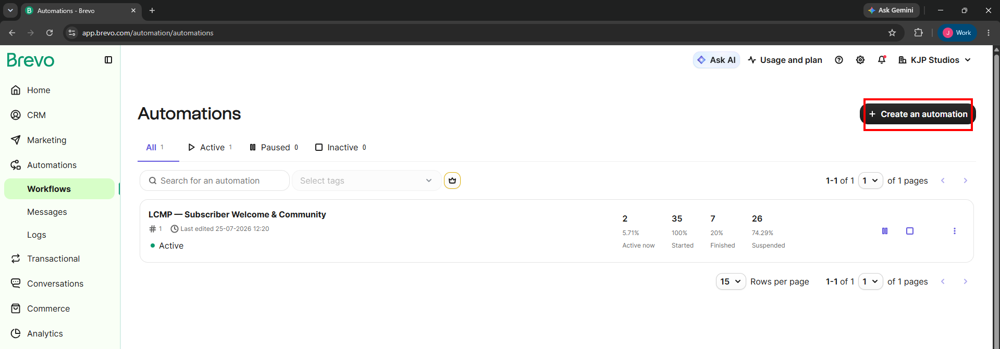
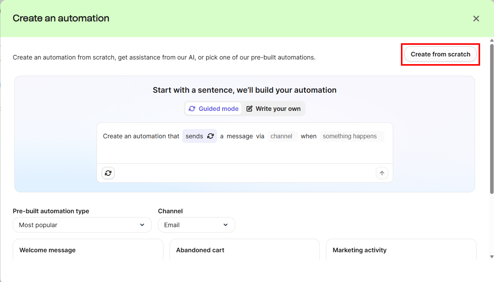

This is the starting point, the Brevo homepage. Here are some key sections/modules featured on the homepage:

First, you need to select the 'Automations' section found on the left panel.

Once you have selected 'Automations' you will be taken to the Automations page where you access workflows, messages, and logs.
Workflows: This is where you build and manage your actual automations — the visual drag-and-drop canvas where you set triggers, actions, and rules (e.g., "contact added to list → wait 2 days → send email"). It's where you create an automation, add triggers/actions/rules, and activate it so contacts start flowing through it. It's also your dashboard for each automation's stats — active, started, finished, and suspended contacts.
Messages: This is a library of every email (or other message) used inside your automations, separate from the canvas itself. All automation messages currently used in the new editor are listed here, where you can view, edit, and share them with other users on your account. You can create a brand-new message from scratch, or select an existing message to reuse — and if you edit a reused message, every linked automation step updates in sync. Handy for finding and tweaking message content without having to dig back into the workflow canvas.
Logs: This is your troubleshooting/monitoring hub, split into three tabs: Workflow logs (everything that happened within a specific automation — monitoring contact progress and spotting where someone's stuck), Event logs (detailed insight into how contacts interact with your forms, website, emails, and automations), and Contacts in Workflow (which contacts are currently active or waiting in a given automation, with the ability to remove up to 50 at a time in case of an error).

Next step is to select the 'Create an automation' button.

Select, 'Create from scratch' which will take you to the automation builder.

This is the automation builder where you will be creating the actual email automation.
This guide walks through the core parts of the automation builder screen in Brevo (the editor you land on after clicking Create an automation), so you know what each area does before you start building.
1. The Left Sidebar
Three tabs control what you're looking at while editing an automation:
2. The Top Bar
Running across the top of the editor:
3. The Step Panel (left of the canvas)
This is your toolbox. It's organized into three tabs:
Triggers
Define when a contact enters the automation. Every automation needs at least one trigger, and triggers can only be placed in the first row of the canvas. Common examples:
You can add more than one trigger to a single automation — a contact enters as soon as they meet any one of them.
Actions
Define what happens to a contact once they're in the workflow — sending an email, SMS, WhatsApp message, adding a tag, creating a task, updating an attribute, and so on.
Rules
Add logic to the workflow — conditions, branches (if/else splits), wait steps, or filters that route contacts down different paths depending on their behavior or data.
Search by step name if you know what you're looking for, or browse the categorized lists (Contacts, Forms, WhatsApp, Email, etc.).
4. The Canvas
The large open area on the right is where you actually build the automation visually:
A brand-new automation starts empty, with a prompt to drop your first trigger onto the canvas.
5. The Basic Building Flow